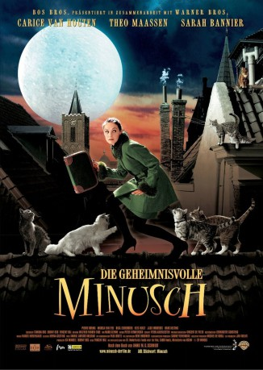

#7236 Die Geheimnisvolle Minusch
Alternativ: Miss Minoes (Englischer Titel)
 
 IMDB-Wertung: 7.0 / 10
IMDB-Wertung: 7.0 / 10  Metascore: 0
Metascore: 0 
Tibbe ist Katzenfreund und extrem schüchtern. Er arbeitet als Reporter bei einer kleinen Tageszeitung in einer kleinen Stadt in Holland. Als er kurz davor steht seinen Job zu verlieren, da er immer zu schüchtern ist um an die großen Storys zu kommen, trifft er die geheimnisvolle Minusch, eine junge Frau die sich ganz anderes verhält als man es sonst so von jungen Frauen gewöhnt ist. Sie liebt Fisch, kann mit Katzen sprechen und behauptet selbst eine Katze gewesen zu sein, bis sie durch einen Zufall zum Mensch wurde. Durch die Hilfe von Minusch wird Tibbe zum gefeierten Reporter und kommt dabei den Machenschaften des skrupellosen Herr Ellemeet auf die Schliche....
Jahr: 2001
Dauer: 86 Minuten
FSK: 0
Land: Niederlande Studio: Warner Bros.Tonspuren:
Untertitel:
Auflösung: 1080p (1920x1080) Größe: 8673 MB
Genre: Komödie, Fantasy, Familie
Regisseur: Vincent Bal
Drehbuch: Annie M.G. Schmidt
Soundtrack:
Darsteller:
- Theo Maassen als Tibbe
 Carice van Houten als Minoes
Carice van Houten als Minoes Pierre Bokma als Ellemeet
Pierre Bokma als Ellemeet Annet Malherbe als Jakkepoes
Annet Malherbe als Jakkepoes- Katja Schuurman als Zus Minoes
- Kim van Kooten als Leentje
- Sarah Bannier als Bibi
- Marisa Van Eyle als Mevrouw Ellemeet
- Olga Zuiderhoek als Mevrouw van Dam
- Kees Hulst als Meneer van Dam
- Hans Kesting als Harry de Haringman
- Jack Wouterse als Burgemeester
- Lineke Rijxman als Pia Bongers
- Bas Teeken als Sjoerd de Wit
- Bianca Krijgsman als Roddeltante
- Plien van Bennekom als Roddeltante
- Wim Van den Heuvel als Meneer Pastoor
- Joep Onderdelinden als Leraar
- Chris Bolczek als Politie Agent
- Iwan Waldheim als Ober
- Loes Luca als Tante Moortje
- Wim T. Schippers als Simon de Schoolkat
- Hans Teeuwen als Tinus
- Paul Haenen als Mevrouw Pastoor
- Frits Lambrechts als Joop
- Nina Van Hattum als Jong Katje
- Joey van der Velden als Boy with Blue Cap , uncredited
Datei: X:\2001\Geheimnisvolle Minusch, Die (2001, FSK0, 1920x1080).mkv seit 09.10.2017
Festplatte: HD 1996-2002
 Es gibt insgesamt 102 Filme in der Gruppe '2001'
Es gibt insgesamt 102 Filme in der Gruppe '2001'